Marcelo Ferrão Macêdo de Carvalho Silva, nascido em 09/11/2011 em Salvador-BA, é um jovem talento do tênis de mesa que já construiu uma história marcante no cenário esportivo baiano. Desde muito cedo, demonstrou paixão pelo esporte e disciplina exemplar nos treinos, treinando diariamente com dedicação total ao seu desenvolvimento técnico, físico e mental.
Sua carreira já é reconhecida por um diferencial importante: Marcelo não se destaca apenas pelo talento, mas pela resiliência e pela maturidade com que encara vitórias e derrotas. Com apenas 13 anos, já atua como referência para os colegas de treino e para atletas mais novos, demonstrando espírito de liderança, respeito aos adversários e exemplo de fair play.
Filiado à Federação de Tênis de Mesa da Bahia (FTMBA), Marcelo vem acumulando resultados expressivos em torneios municipais, estaduais e escolares, sempre elevando o nível de seu jogo a cada temporada. Em 2025, conquistou de forma antecipada o título de Campeão Baiano SUB-15, um feito que confirma sua evolução e o coloca entre as maiores promessas do tênis de mesa da Bahia.
Além das conquistas esportivas, Marcelo participa ativamente de projetos sociais em seu clube, mostrando que compreende o esporte não apenas como competição, mas como ferramenta de transformação pessoal e coletiva. Seu compromisso com a superação, com os estudos e com o esporte o transformam em um verdadeiro exemplo para a nova geração de atletas.
TÍTULOS E RESULTADOS
2025
🏆 Campeão Baiano Antecipado – Circuito Baiano de Tênis de Mesa SUB-15
🥈 2º lugar – 4ª Etapa – Circuito Baiano SUB-15
🥉 3º lugar – 3ª Etapa – Circuito Baiano SUB-15
🥇 1º lugar – Jogos Internos Montessoriano
🥇 1º lugar – Campeonato Serrinhense de Tênis de Mesa – AABB
🥇 1º lugar – 2ª Etapa – Circuito Baiano SUB-15
🥇 1º lugar – 2ª Etapa – Circuito Baiano – Rating F
🥈 2º lugar – 1ª Etapa – Circuito Baiano SUB-15
🥉 3º lugar – 1ª Etapa – Circuito Baiano – Rating F
🥈 2º lugar – 1ª Etapa FEEPS – Festival Esportivo das Escolas Particulares de Salvador
2024
🥉 3º lugar – Aberto C – Torneio Interno CTB
🥇 1º lugar – 6ª Etapa – Divisão Única – ETMPAN
🥇 1º lugar – 5ª Etapa – 3ª Divisão – Campeonato ETMPAN (AABB – Salvador)
🥇 1º lugar – 5ª Etapa – Divisão Única – ETMPAN
🥇 1º lugar – Jogos Internos Montessoriano
🥈 2º lugar – 2ª Etapa FEEPS – Festival Esportivo das Escolas Particulares de Salvador
🥇 1º lugar – Torneio Estudar – CTB
🥉 3º lugar – Torneio Aberto C – CTB
🥈 2º lugar – 3ª Etapa Aberto ATMC – 4ª Divisão
🥉 3º lugar – 3ª Etapa – Torneio de Confraternização – CTB
2023
🥉 3º lugar – 2ª Etapa FEEPS – Festival Esportivo das Escolas Particulares de Salvador
MARCELO EM PERSPECTIVA
Marcelo já soma mais de 20 títulos e pódios oficiais entre 2023 e 2025, um currículo impressionante para um atleta de apenas 13 anos. O mais marcante é a consistência: em praticamente todas as competições que participa, ele alcança o pódio, confirmando não apenas talento, mas também foco e preparo mental.
O futuro aponta para horizontes ainda maiores. Em 2026, Marcelo terá pela frente o desafio de ampliar sua presença em torneios nacionais, medindo forças com os principais atletas da categoria. Seu projeto de fortalecimento esportivo inclui acompanhamento multidisciplinar — técnico, nutricional, psicológico e físico — garantindo que sua evolução seja sustentável e completa.
Mais do que títulos, Marcelo representa uma nova geração do tênis de mesa baiano: jovem, competitivo, ético e consciente do papel social do esporte. Seu caminho inspira não apenas colegas de treino, mas também crianças e adolescentes que veem no esporte uma oportunidade de crescimento.
Ele é prova viva de que talento, aliado a disciplina e valores humanos, pode transformar sonhos em conquistas reais.
ÁLBUM DE FOTOS
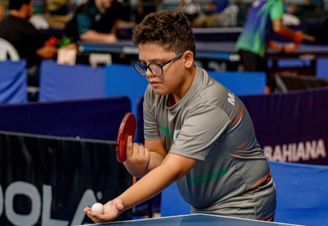
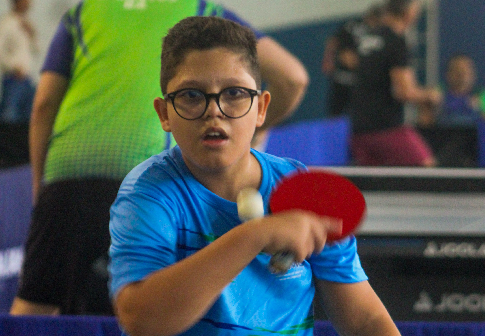
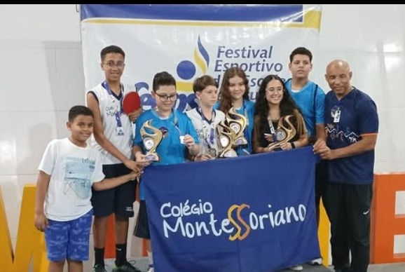
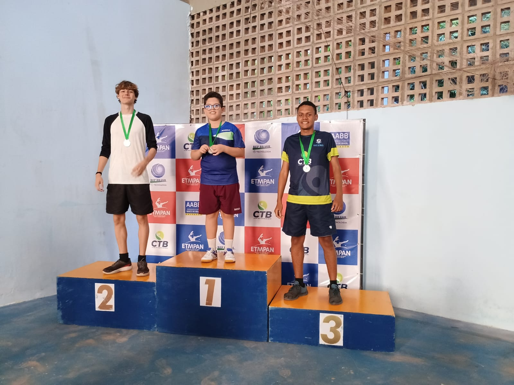
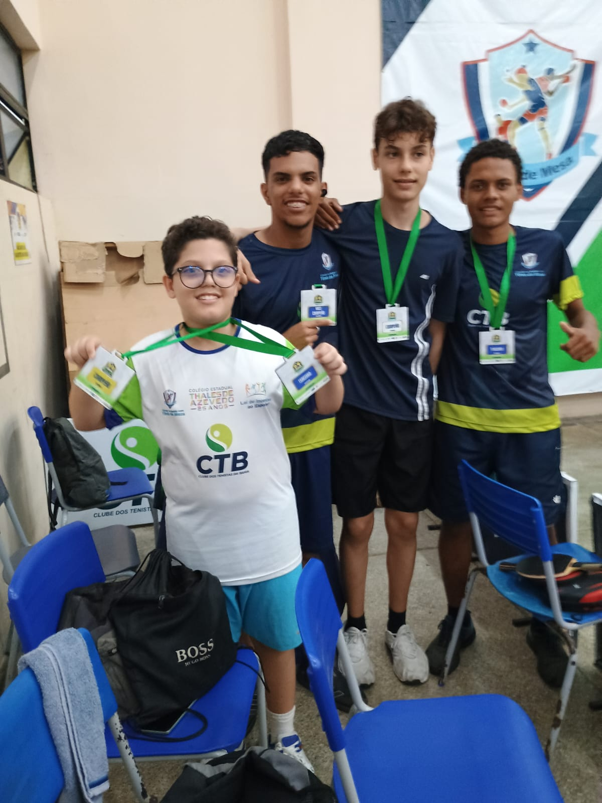
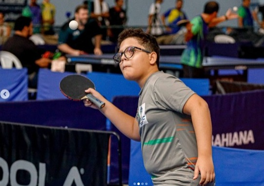
PROJETO
Fortalecimento e Excelência Esportiva
Objetivo Geral: Consolidar Marcelo como um exemplo de excelência no tênis de mesa, potencializando seu desenvolvimento técnico, físico, mental e social.
Valor Solicitado: R$ 40.000,00 para o período de 12 meses (Jan-Dez/2026).
Objetivos Específicos
Participar de pelo menos 12 competições oficiais em 2026.
Alcançar o top 3 do ranking estadual SUB-15.
Realizar até 6 sessões semanais de treino focado na evolução técnica e estratégica.
Garantir suporte multidisciplinar com acompanhamento médico, nutricional e psicológico.
Monitorar e analisar o desempenho com ferramentas digitais.
Orçamento Previsto
Bolsa Atleta: R$ 14.400,00
Academia Especializada: R$ 7.200,00
Materiais/Equipamentos: R$ 5.000,00
Treinamento/Técnico: R$ 4.800,00
Viagens e Hospedagem: R$ 4.800,00
Gestão Esportiva: R$ 2.000,00
Inscrições, Uniforme e Calçados: R$ 1.800,00
TOTAL: R$ 40.000,00
LEI DE INCENTIVO AO ESPORTE
Programa Viva Esporte
A Prefeitura de Salvador, através da SEFAZ e da SEMPRE, regulamentou o Programa de Incentivo ao Esporte - VIVA ESPORTE. O programa permite que empresas contribuintes do ISS (Imposto Sobre Serviços) destinem parte do imposto devido para financiar projetos esportivos na cidade.
O objetivo é fomentar o desenvolvimento esportivo, promover a inclusão social e apoiar atletas e eventos locais por meio da renúncia fiscal. Dessa forma, a iniciativa privada se torna parceira direta na construção de um futuro melhor para o esporte em Salvador.
Simulação de Incentivo Fiscal - ISS
Empresas que pagam ISS em Salvador podem destinar até 20% do valor anual do imposto devido para apoiar projetos esportivos aprovados pelo Viva Esporte. O incentivo é abatido diretamente do ISS após o investimento.
Valor ISS pago ano (R$)
20% Viva Esporte (R$)
Aporte mensal máx. (R$)
100.000
20.000
1.666,67
200.000
40.000
3.333,33
300.000
60.000
5.000,00
400.000
80.000
6.666,67
500.000
100.000
8.333,33
600.000
120.000
10.000,00
700.000
140.000
11.666,67
800.000
160.000
13.333,33
900.000
180.000
15.000,00
1.000.000
200.000
16.666,67
1.100.000
220.000
18.333,33
1.200.000
240.000
20.000,00
O incentivo não se aplica a empresas do Simples Nacional e depende de aprovação do projeto esportivo.
 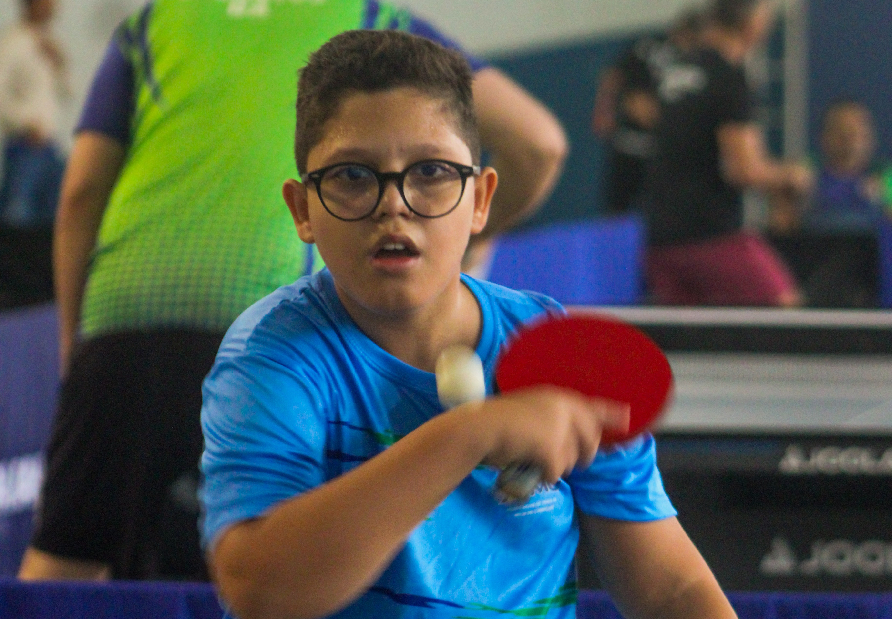
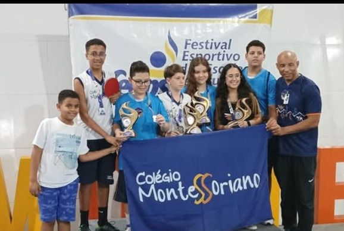
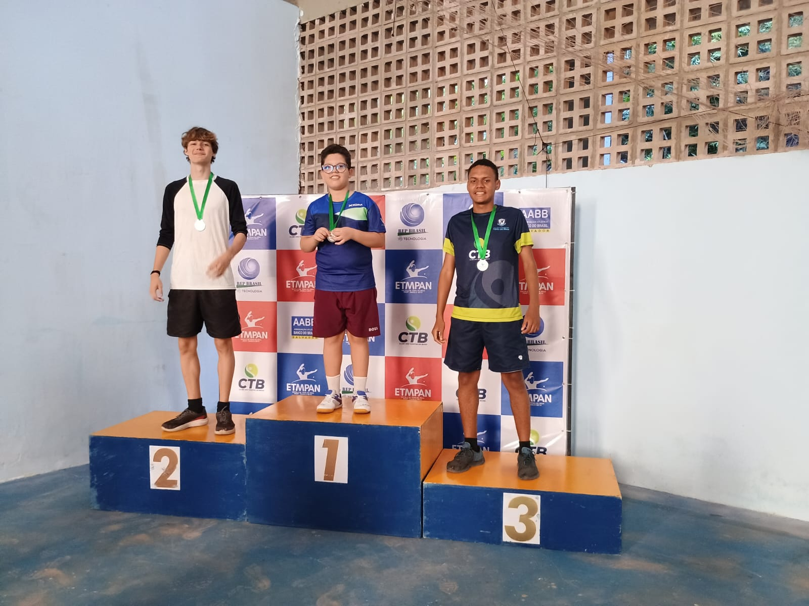
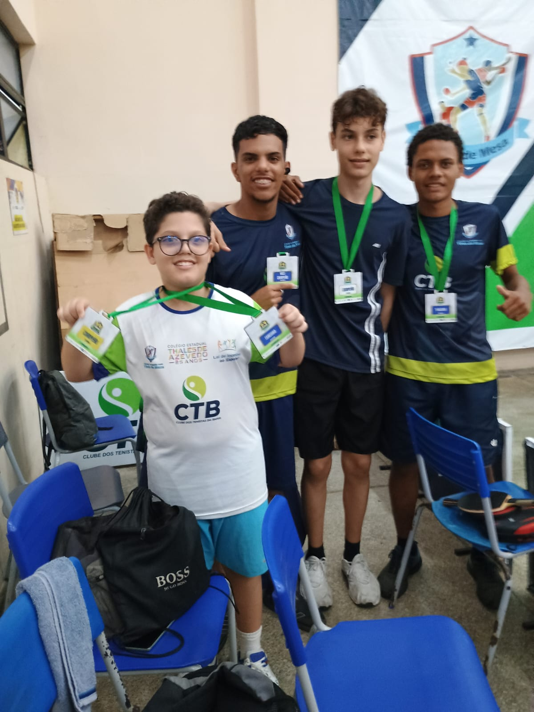
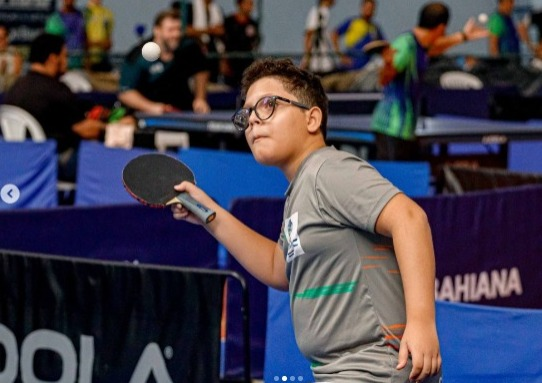
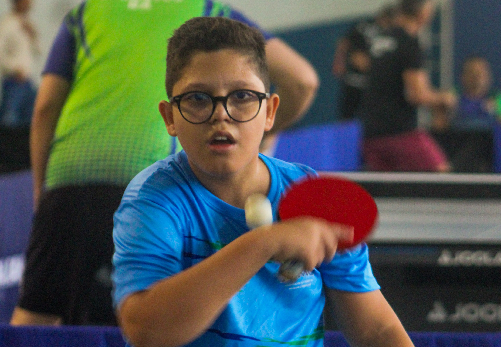
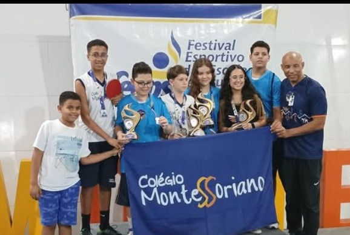
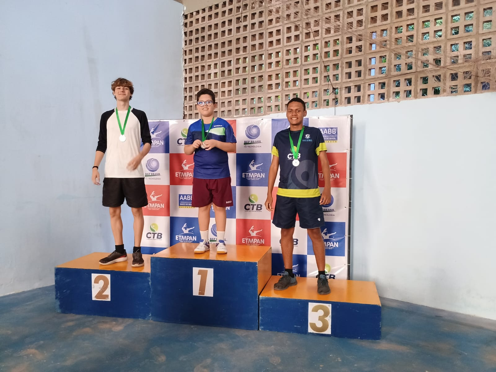
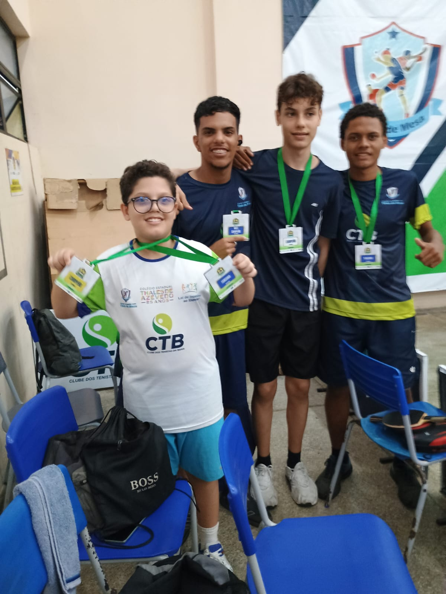
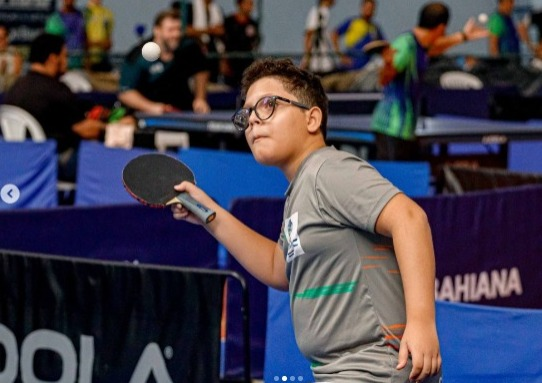